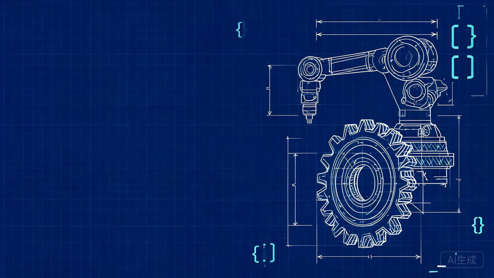

不说教、不画饼。一个学机械的朋友，把自己踩过的坑和尝到的甜头，摊开给你看。
Contents
从改图改到崩溃说起。
行业悄悄发生的三件事。
招聘软件上的真实数字。
我当年全都这么想过。
不花一分冤枉钱的 90 天路线，最后还有一个可以直接上手玩的小演示。
Chapter 01
先说清楚：我也挂过科，也通宵画过图，不是来当人生导师的。
Chapter 01 · 我的故事
减速器装配图改到第 20 版，指导老师看了一眼："这条线的粗细不对。"——那天晚上我对着 AutoCAD 怀疑人生。
金工实习 200 组测量数据，求平均、算误差、填表格。我拿着计算器摁到凌晨一点，还摁错了三组。
桌面上一排："最终版.dwg""最终版_改.dwg""真·最终版2.dwg"。交图前五分钟，我自己都分不清哪个是哪个。
当时我以为，这就是我们机械人的命。直到有一次，我实在是懒到受不了了。
Chapter 01 · 我的故事
Chapter 02
机床在联网，机器人在学写代码，车间里新来的同事是块屏幕。
Chapter 02 · 外面在变
数据来源：教育部、人社部、工信部《制造业人才发展规划指南》对 2025 年的预测。划重点——"高档数控机床和机器人"那一栏，正好是我们踮踮脚就能够到的方向，而那里最缺的是"懂机械、又能摆弄软件和控制系统"的人。
Chapter 02 · 外面在变
某主流招聘 App 上随手搜出来的大致月薪区间（一线城市，供参考，强烈建议你自己也去搜搜看）。我不保证学了编程就能拿多少，但选项确实变多了——同样的毕业证，你会的东西决定了你能投哪一类的岗位。
Chapter 03
我当年也是这么劝退自己的，一条条拆开看。
Chapter 03 · 你的顾虑
Chapter 03 · 你的顾虑
所以你写出来的程序不会脱离实际加工——±0.02 不是闹着玩的，你比谁都清楚。
代码算出来的结果靠不靠谱、能不能加工出来，你一眼就有感觉。这个直觉很值钱。
刀具怎么走、机械臂怎么避障、力从哪传到哪——纯码农写不出刀路，但你可以。
说实话，代码只是工具。你脑子里的机械知识才是本体，代码负责把它放大十倍。
Chapter 04
不报班、不买课、甚至不用"上课"——AI 一对一私教版。
Chapter 04 · 怎么开始
不用报班也不用找课——直接让 AI 当你的私教：用机械系的例子讲 Python，不懂就追问，追到懂为止。每天 30 分钟，目标只有一个：看得懂大概。
AI 一对一私教写一个马上能帮到自己的小工具：批量重命名图纸、自动算课设数据、整理实习表格。做完你会上瘾。
成就感爆棚玩一玩 SolidWorks 宏命令、数控宏程序，或者简单的机器人仿真。这一步开始，你的简历就不一样了。
和专业结合拿它去参加技能大赛、写进简历、或者接个小活。别追求完美，先用起来。
变成筹码Chapter 04 · 上手玩一下
《机械设计基础》里最熟的公式：d = m × z。写成代码就三行：
// 分度圆 / 齿顶圆 / 齿根圆 d = m * z da = m * (z + 2) df = m * (z - 2.5)右边这个齿轮就是这几行代码实时画出来的。拖动滑块改改参数——这就是参数化设计，SolidWorks 二次开发干的也是同样的事，只是零件更复杂。
我不是劝你转行，
是劝你给自己的专业，装一个涡轮。
— 一个学机械的朋友
车间见，
也在代码的世界里见。